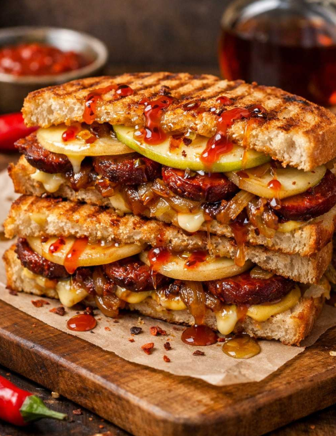
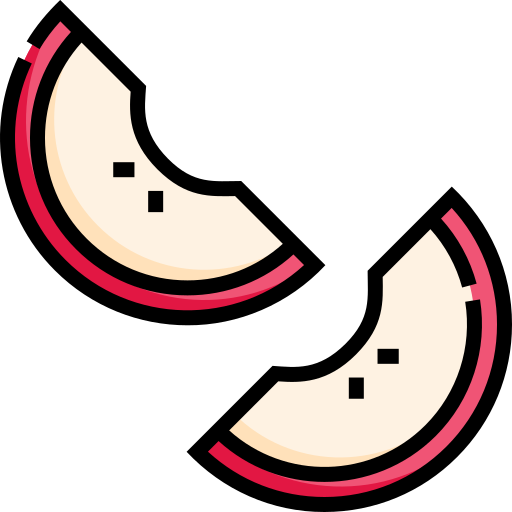
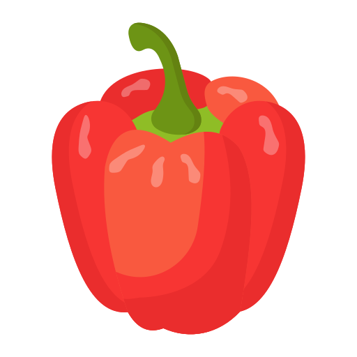

Tostradamus
Fesleğenli pesto, Antep fıstıklı dana jambon, eriyen kaşar ve kurutulmuş domates dokunuşuyla.



Vegan Tost
Vegan kaşar peyniri, vegan sucuk, karamelize soğan, elma dilimleri, hardal, ballı acı sosuyla enfes lezzet.





Tostınbiber
Közlenmiş biber, kasap sucuğu ve beyaz peynirin dağ kekiği aromasıyla harmanlanan geleneksel buluşması.


Tosttoy
Bol kaşar, özel soslu domates ve çıtır ekmeğiyle klasik ama vazgeçilmez bir tercih.